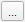
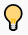
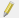
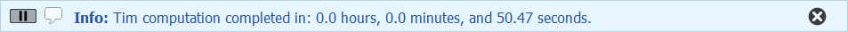
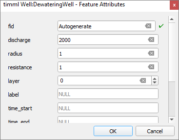
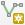
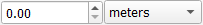
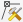

Building Pit Rijsenhout
Requirements
- Be sure QGIS version 3.28.00 or higher is installed.
- Be sure the
gistimPython package is installed (see installation for instructions). - Download the tutorial material. Follow this link.
- Internet connections is optional during this Tutorial. It is only required for installation of additional plugins and the use of an online topographic background map.
Description
In this tutorial, you will learn how to:
- install and use the QGIS-Tim plugin;
- use the basic of QGIS for pre- and postprocessing of TIM;
- create several steady state models (TimML) and a transient model (TTim);
- analyse the results;
- export your model to a Python script.
Objective
Calculation of a pumping well extraction.
Introduction case Rijsenhout
In one of the fields west of Rijsenhout industrial activities are planned, the construction of green houses. From historical sources it is known that some bombs from World War 2 are still in the surface. Before building starts, these bombs are removed for safety reasons. The question is: what dewatering is necessary to be able to remove the bombs in dry conditions? The contractor plans to drill sheet piles to prevent the excavation from collapsing. The groundwater level inside the building pit is lowered with a set of wells just in the top of the aquifer within the building pit. All pumped water is infiltrated over a stretch of wells near the existing buildings.
At the project location, the top layer is 12 m thick and consists of a low permeable combination of clay and peat. Below this top layer we find an aquifer of 50 m. The Westeinderplassen, a lake system with a depth of 3 m., is located East of the project area.
Getting Started
- Launch QGIS from your START menu, from your desktop or click on …\QGIS3.28.0\bin\qgis-bin.exe.
Intermezzo: QGIS language settings
Perhaps your QGIS was installed in another language than English. Because the Tutorial refers to the English version, let’s change to English.
- From the main menu click on Settings and select Options (e.g. in Dutch Extra and Opties).
- In the new window go to the General section (Dutch: Algemeen) on the left.
- Check the box to allow Override System Locale (Dutch: Landinstellingen negeren) and expand this sub menu.
- From the drop-down menu “User interface translation” (Dutch: Vertaling gebruikers-interface) select American English and click OK.
- Close QGIS and open it again to activate your language change.
We start with the creation of a new QGIS project.
- From the main menu click on Project and select New.
The case in this tutorial is located in The Netherlands, so next we select the appropriate projection.
- From the main menu click on Project and select Properties.
- In the Properties window select the category CRS, search for “EPSG:28992” and you find “Amersfoort / RD New”. Select this option and click the Apply button, followed by the OK button to close the window.
In case your work is mostly in The Netherlands and in the “Amersfoort / RD New” projection, consider making this your default projection.
- From the main menu click on Settings and select Options….
- In the section CRS and Transforms select CRS (handling), pick the radio button Use a default CRS and select “EPSG:28992 -Amersfoort / RD New”.
- Click OK.
- Close this window.
Install plugins
This is the moment to import four plugins needed for this tutorial:
- the QGIS-Tim plugin (developed by Deltares).
- the iMOD plugin (developed by Deltares).
- the Value Tool. A plugin to display in table or plot values from raster layers (or mesh layers) at the current mouse position.
- the PDOK plugin. This plugin gives access to a large database from which we will load the topographic maps and use the navigation option.
To install the plugins from QGIS you need an internet connection!
No internet connection? Follow the next steps to import the two Deltares’ plugins from a ZIP file provided in the Tutorial Dataset.
- Go to Plugins from the main menu and select Manage and Install Plugins… to open the plugin window.
- On the left section select Install from ZIP.
- Click the Browse button () and select the ZIP file “QGIS-Tim_Tutorial\QGIS-iMOD-plugin.zip”.
- Click Install Plugin.
- In the same way, install the QGIS-Tim plugin using the ZIP file “QGIS-Tim_Tutorial\QGIS-Tim-plugin.zip”.
If you have an internet connection, all four plugins can be downloaded within QGIS.
- At the top, find the Plugins menu (~sixth object in the menubar).
- Find "Manage and Install plugins" (~first object in drop-down).
- Find "All" (~first in left section).
- Search for "Qgis-Tim".
- Click "Install Plugin".
- Search for “iMOD” and install it.
- Search for “Value Tool” and install it.
- Search for “PDOK services plugin” and install it.
- Make sure that under Plugins > Manage and Install Plugins > Installed now the 4 added plugins are checked.
- Close the Plugins window.
See in the toolbar section of QGIS that the plugins are installed:
- iMOD Toolbar

- QGIS-Tim
- Value Tool
- PDOK Services Plugin
Further in this Tutorial we will use some default toolbars that might be hidden at the moment. Let’s check that and unhide if necessary.
- Select View from the main menu and choose Toolbars.
- Be sure the “Advanced Digitizing Toolbar”, the “Snapping Toolbar” and the “Attributes Toolbar” are checked.
Prepare your project
For navigation purposes, let’s load a topographic map for The Netherlands from the online PDOK database.
No internet connection? Follow the next steps to import a simple PNG file as a background.
- Go to Layer in the main menu, go to Add layer and select Add Raster layer.
- Use the browse button () and from the tutorial material select “…\QGIS-Tim_Tutorial\dbase\TopographicMapRijssenhout.png”.
- Click on Add and Close the window.
- If you do not see the map, select the layer “TopographicMapRijssenhout”, click your right mouse button and select “Zoom to Layer(s)”.
- Continue after step 23.
- If you do have an internet connection click on the PDOK plugin button () to open the “PDOK Services Plugin” window.
- From the tab PDOK Services search for “pastel” and you will find a WMTS type layer called “BTRM Achtergrondkaart WMTS”.
- Select the layer.
- In the section “laag toevoegen” click the button Onder.
- Close the PDOK window.
Our project area is near the town of Rijsenhout so let’s navigate to that town using the PDOK plugin.
- Type “Rijsenhout” in the PDOK search field, near the PDOK button (
 )
) - PDOK will find “Rijsenhout, Haarlemmermeer, Noord-Holland”. Click on it and QGIS will fly you to the project location.
Let’s now open a shape file containing the locations and depths of the bombs.
- Go to Layer in the main menu, go to Add layer and select Add Vector layer.
- Use the browse button () and from the tutorial material select “…\QGIS-Tim_Tutorial\dbase\bombs.shp”.
- Click on Add and Close the window.
 Tip: a fast alternative for adding layers: from the menu View > Toolbar add the Manage Layers Toolbar and use the button  .
.
- In the Layers panel on the left, select the layer “bombs”.
- Click your right mouse button and from the menu select Show Labels.
- You can zoom in and out with the scroll button on your mouse or navigate with the buttons in the main menu:

- Use to pan the map with your left mouse button and use
 to zoom to the extend of the layers/groups selected in the Layers panel.
to zoom to the extend of the layers/groups selected in the Layers panel.
Let’s save this project to be able to return to it later or in case of a crash of QGIS.
- Go to Project in the main menu, select Save As and select a folder and a file name for your project, e.g. “…\QGIS-Tim_Tutorial\Rijsenhout.qgz”
Start your Tim model
Now we are ready to activate the QGIS-Tim plugin.
- Click on the QGIS-Tim plugin button () and the QGIS-Tim panel appears.
- Go to the tab Model Manager.
Here we will create an empty database (GeoPackage) to store all elements and parameters for the model. - Click the New button to create the GeoPackage and save it for instance in the folder with your tutorial data, e.g. “..\QGIS-Tim_Tutorial\dbase\case-Rijsenhout.gpkg”.
Your window looks like in Figure 2.
- Check in the Layers panel on the left that your new geopackage is added as a group.
A sub group timml for the steady state model input and the sub group ttim for the transient model input.
If you had no introduction to the Tim plugin, read the Intermezzo below for a general explanation of the components.
Intermezzo: introduction Tabs on the Tim panel
- Model Manager: an overview of the elements in your geopackage. In case you switch to transient modelling, an extra column with ttim elements is added.
- Elements: a list of at least 16 Tim elements from which you can build your model.
- Results: here you can define your domain and cell size, decide if your model is transient or not and manage the output files.
Now we are ready to define our first steady state model by parameterizing our Aquifer.
Model 1: single aquifer
We start with a very simple ‘model’, only the parameters of a single aquifer.
Important message: all editing of model parameters and model elements you do in the Layers panel on the left!
- So select the layer “timml Aquifer:Aquifer” on the left.
- Click your right mouse button and from the menu select Attribute Table to open the table in a new window.
NB Alternative is to press F6 or use the button Open Attribute Table (). - Start the editing mode with a click on the Toggle Editing Mode button ().
- Hover with your mouse over the buttons and find the Add Feature button (). Perhaps button 5 from left.
- Add a new feature with this Add Feature button. In this case a feature is a hydrological layer.
- Fill the feature with the values from the table below:

| parameter | value | unit | comment |
|---|---|---|---|
| fid | Autogenerate | [-] | ID is autogenerated by QGIS |
| Layer | 0 | [-] | (see remark below) |
| aquifer_top | +2 | [m MSL] | |
| aquifer_bottom | -10 | [m MSL] | |
| aquifer_c | NULL | [d] | |
| aquifer_k | 5 | [m/d] | |
| semiconfined_top | NULL | [m MSL] | |
| semiconfined_head | NULL | [m MSL] |
NB! About Layer = 0. In the real world counting starts with 1. However, Tim is programmed in Python and in Python counting starts with 0. You will get used to it.
- Save all changes with the Save Edits button ().
- Stop the Editing Mode with a click on the button ().
- Close the Attribute Table window with a click on the X in the upper right corner.
Also be aware that the Aquifer element you just edited is just a table. This is indicated with the icon () just before the layer name in the left panel. For Tim this means that the properties in this table apply for the full model domain. We will introduce some inhomogeneities later as polygons within that domain.
- Go to the tab Results in QGIS-Tim.
- Click the button Set to current extent.
- On the tab sear for the section Output. Here you see that the output folder is by default the same as the folder of your geopackage.
- See that from the output type ‘Raster’ is not selected so only Meshes are created.
- Start the calculation with a click on Compute.
A black Python.exe window pops up indicating that the TIM calculation started on the background. You can ignore this window but keep it open. Of course you van minimize it. If the calculation was completed successful, you will see this echo in QGIS. .
After the calculation you see that the result is automatically added to a new geopackage, probably called “case-Rijsenhout output”. Results are saved as vector and/or mesh and raster. For each output format a separate sub group is created. The sub group Raster is empty while the output option Raster was not checked.
Although these layers / groups are checked, the data is not visible. That is because the geopackage was added last, and QGIS adds layers at the end of the list. Let’s move the layer “pastel” to the background.
- Select the layer “pastel” and drag it with your left mouse button to the bottom of the list of layers.
The calculation result is now visible and we see a mesh with just the value 0, not a very exciting result because no other elements are present yet. Let’s now add a well element.
Intermezzo: Mesh and Raster format explained
- Mesh: an unstructured grid usually with temporal and other components. Preferred format in QGIS-Tim to animate temporal data, to create cross sections or evaluate values at your mouse position.
- Raster: is made up of pixels (also referred to as grid cells). They are regularly spaced and square. Preferred format in QGIS-Tim to perform calculations with the Raster Calculator tool.
Model 2: single well
- First hide the output layers by deselecting the sub group mesh or even the main group case-Rijsenhout output.
- Go to the tab Elements in QGIS-Tim.
- Click on the element “Well” and a window opens to create a new (vector) layer in QGIS.
- Give the layer a name, e.g. “DewateringWell” and click OK.
See that layer “timml Well:DewateringWell” is added to the timml sub group in your geopackage with ‘point’ as geometry. Also in the ttim sub group an element with the same name is added. This is a table that can store transient well data while referring to the x/y locations in the timml layer. Next step is to add the actual well, both the location and its parameters.
- Select the layer “timml Well:DewateringWell”.
- Click your right mouse button and select the Toggle Editing Mode ().
- To add a new well (feature) to the layer click the Add Point Feature button (
 ).
). - With your mouse, click on a location in the centre of the group of bombs.
- Fill the feature with the values from the example below.

- Click OK.
- Click the Toggle Editing button () and if you are asked to save changes and select Save.
An alternative way to save your edits is to click the Save Layer Edits button ( ) and then stop editing with the Toggle Editing button ().
) and then stop editing with the Toggle Editing button ().
Next step is to rerun the model including the new well.
- In QGIS-Tim go to the tab Model Manager and see that the Well is added.
- Go to the tab Results and select also the output format Raster.
- Click on Compute to rerun your model.
The output in your ouput group “case-Rijsenhout output” is directly overwritten with the new results. In the sub group mesh you see the created raster “case-Rijsenhout-head_layer_0”.
Do you like to see the values of the calculated Head under you mouse?
- Make the results visible again. So see if the group case-Rijsenhout output and mesh are checked.
- Select the output sub group mesh and deselect the group raster.
- Select the Value Tool button ().
- Hover over the area and in the “Value Tool” panel you see the value within the mesh file at your mouse location.
Do you like to see the values in a cross section? Deltares developed the Cross Section Tool, available in the iMOD Plugin.
On the iMOD Toolbar select the Cross section button (
 ) to start the iMOD Cross Section tool. In the empty cross-section we can add a selection of (geological) layers. For now, we only select the calculated heads.
) to start the iMOD Cross Section tool. In the empty cross-section we can add a selection of (geological) layers. For now, we only select the calculated heads.On the iMOD Cross Section Plot click on the button Select location and draw your cross-section line from north to south (right mouse button to close the line).
From the dropdown menu on the left of this toolbar, select the raster () named “case-Rijsenhout-head_layer_0”.
Click the button Add to add this layer to the cross-section manager below.
Click the button Plot to draw this layer in the cross section.
Your screen might look like Figure 4.
TIP: If you do not see any line, perhaps the axes are not defined well. To view all data, click you right mouse button in the figure and select the option “View All”. The alternative is to click on the small A symbol ( ) in the lower left of the chart.
) in the lower left of the chart.
Model 3: multiple layers
A single aquifer is of course not enough to describe the geology of our project area. A simplification of the geology is given in the cross section in Figure 5. In this low lying polder, there is a Holocene top layer of 12 m thickness on top of an aquifer. The surface level of the top layer is 5 m below see level, it has a resistance of 1500 days and the water level within this polder is 1 meter below surface level. The aquifer has a horizontal permeability of 30 m/d and a thickness of 50 m. The anisotropy factor is 3 resulting in a vertical resistance of 0.1 day per meter. Tim can handle multiple layers so the next step is to bring these parameters into the model.
- In your geopackage select the layer “timml Aquifer:Aquifer” and click your right mouse button.
- From the menu select Open Attribute Table and the table opens in a new window. Once again, press F6 for a quick open of the Attribute Table.
- Start the editing mode with a click on the Toggle Editing Mode button ().
- Add three extra aquifers / features; click three times on the Add Feature button ().
- See that for the new elemenst the fid is set to Autogenerate. Be aware that your QGIS probably resorts the layers and brings the existing layer (layer=0) to the botom of your table.
The Holocene top layer is not a distinguished layer but a resistance on top of layer 0.
- Fill the features with the values from the table below.
NB Never change the fid=1 of the first layer, even if it is not on top of your table.
| fid | layer | aquifer_top | aquifer_bottom | aquitard_c | aquifer_k | semiconf_top | semiconf_head |
|---|---|---|---|---|---|---|---|
| 1 | 0 | -17 | -22 | 1500 | 30 | -5 | -6 |
| 2 | 1 | -22 | -27 | 0.5 | 30 | NULL | NULL |
| 3 | 2 | -27 | -47 | 1.25 | 30 | NULL | NULL |
| 4 | 3 | -47 | -67 | 2 | 30 | NULL | NULL |
- Save your changes and close the window.
- Go to the tab Results and run the new model with a click on the button Compute.
Let’s now check the calculated heads for the 4 layers, first with the Value Tool and then with the Cross section tool.
- From the layers select the layer “case-Rijsenhout-output:raster” and deselect the “case-Rijsenhout-output:mesh”.
- Activate the Value Tool ().
- In the Value Tool panel go to the tab Options.
- For Show Layers choose “Visible layers” and for Show bands choose “Active bands”.
- Return to the tab Table and hoover over the calculated values, especially near your well.
- Activate the iMOD Cross section widget () to create your cross section with the four layers (Need instructions? Go back to step 69 for support).
NB You don’t need to ‘add’ all four layers separately. Just use the raster file () “case-Rijsenhout-head_layer_0” and from the dropdown menu Variable: select the four bands/layers.
Model 4: add a set of sheet piles
Now we introduce a new but frequently used element: the sheet pile.
- Return to the QGIS-Tim panel and go to the tab Elements.
- Click on the element “Leaky Line Doublet”.
- Give the layer a name, e.g. “sheetpile”.
- In your geopackage select the layer “timml Leaky Line Doublet:sheetpile” and start editing using the Toggle Editing Mode button ().
- In the editing mode, the Add Line Feature button () is available. Click the button and draw a box around the 5 bombs (click left to start, click right to close).
- In the Feature Attributes window make resistance = 1500 and layer = 0.
- Click OK.
You probably tried to close the building pit but either your lines cross or do not close actually when zooming in. To close the pit, let’s snap both start and end point together.
- First enable the snapping mode with a click on the button (), available on the Snapping Toolbar.
- Make sure the Tolerance is set to 0.00 () in the Snapping Toolbar.
- Then activate the Vertex Tool with a click on the button .
- Move your mouse to the start point location and when it shows a small circle, click your left mouse button.
- Next, move your mouse towards the end point and you see the snapping active: the end point gets a small fuchsia box.
- Click your left mouse and you see that both vertices now connect.
Perhaps you are not satisfied with your created building pit.
- You can play around with other nice options in QGIS to move (), rotate () or scale () your pit.
- End the Toggle Editing Mode with and save your changes.
- In the QGIS-Tim panel go to the tab Results.
- Rerun your model and check the calculated heads.
Disappointed in the effect of the sheet piles on the calculated head? You are right if you expected no major effect because of the shallow penetration in this high permeable thick aquifer. If we would increase the aquitard_c between layers 0 and 1, perhaps we would see more effect of the sheet piles.
- If you dare… try to rerun the model yourself with aquitard_c = 800 (layer 1) and see that the drawdown is limited to the building pit (Figure 6.)
- Don’t forget to undo this side path and make aquitard_c = 0.5 again for layer 1.
How to reopen Tim after closing QGIS
Before we introduce you another new Tim element we must explain you how to reopen your Tim project after a closure of QGIS. A crash might close QGIS or just a long day of work is a reason to shut down your laptop Always remember two things:
- your geopackage is saved as a *.gpkg file and contains the complete set of model features and parameter values. Every time you change a model element, you will remember, you had to save the changes. So the GPKG file is always up to date.
- your QGIS project is saved in the *.qgz file and contains all the added layers and their format (legend, line color, labels etc.).
Now let’s experience what it is to close and open QGIS including your QGIS-Tim project.
- Save your QGIS session (Ctrl+S).
- Select Project from the main menu and choose New.
- Again select Project but now choose Open Recent and find your own project in the list.
The Tim panel is empty but why?
It is not possible for the plugin to automaticcaly read your geopackage as it is loaded in the Layers panel. But there is good news. QGIS-Tim added a hidden line to your QGIS project file *.qgz. This line contains the full path to your last active geopackage file *.gpkg. Based on this information QGIS-Tim can restore your last active Tim project.
- In the tab Model Manager click the button Restore.
- A window pops up asking you if you agree to restore the last active project.
- Click Yes and you see the Model Manager is filled with all project information.
In the backgorund the plugin first removes all layers and than opens the geopackage again. You did not see it, did you? It happend in a blink of an eye.
Model 5: add infiltration of drainwater
To prevent damage on the private properties caused by the dewatering, the authorities demand 50% of the drained flux to be infiltrated. For the infiltration a horizontal well of 400 m is used. In Tim this element is called “Line Sink Ditch”. Let’s add this element just along the road (Aalsmeerderweg) southeast of the project area.
- On the tab Elements in QGIS-Tim click on the element “Line Sink Ditch”.
- Give the layer a name, e.g. “InfiltrationWell”.
See that layer “timml Line Sink Ditch:InfiltrationWell” is added to the timml sub group in your geopackage with ‘line’ as geometry. For the transient version of the model a table with the same name is added to the ttim sub group. Next step is to add the location of the horizontal well and its capacity.
- Click the *Measure Line” button () from the “Attributes Toolbar”.
- With your left mouse button try to get an idea what a distance of 400 m along the road looks like. Close the window.
- Select the layer “timml Line Sink Ditch:InfiltrationWell”.
- Start editing with the Toggle Editing Mode.
- Use the Add Line Feature button () to draw a 400 m line (click left to start, click right to close).
- Fill these feature within the table: discharge = -1000 (negative abstraction is flux into the model), resistance = 1, width = 1, layer = 0! not NULL ;-). By default order = 4.
- Click OK.
- Stop editing the layer, save your changes.
- Rerun the model.
- Analyse the results with the iMOD Cross Section widget. Your graph may look like Figure 7.
Model 6: add observation points
We have the Value Tool and the Cross section tool to check for calculated values in the rasters. Besides that, Tim has the opportunity to add observation points automatically providing you with the calculated heads.
- On the tab Elements in QGIS-Tim click on the element “Head Observation”.
- Give the layer a name, e.g. “Piezometers”.
- Select the new layer “timml Head Observation:Piezometers”.
- Start editing with the Toggle Editing Mode and use Add Point Feature button ().
- Click with your left mouse button to place a point near point A.
- In the poped up window fill in Label = A and click OK.
- Go to the layer “timml Head Observation:Piezometers”, click your right mouse button and activate “ show labels”
- Add point B close to the dwatering well (Figure 8).
Are you tired of the pop-up window every time you add a point? There is an option to add points C to E in one serie and fill in the labels afterwards.
- On the tab Model Manager, in the lowest section, check the option “Suppress attribute form pop-up after feature creation”.
- Place points C to E.
- Open the Attribute Table from layer “timml Head Observation:Piezometers” and fill in the Labels C to E.
- Save your changes and stop the editing mode.
- Compute the model again.
The observed values are saved in a new layer under the existing group “case-Rijsenhout output” and sub group “vector”.
- In this sub group select the layer “case-Rijsenhout-timml Head Observation:Piezometers” and check the calculated values within this layer by opening the Attribute Table (F6).
- Close the Attribute Table.
Draw Contour Lines
One way of displaying the calculated results is still missing: contour lines.
- In QGIS-Tim go to the tab Results.
- In the section Contour select layer “case-Rijsenhout-head_layer_0”.
- Define the contours from -9 to -5 with an increment of 0.10 and click Redraw contours.
A layer with your contours is saved in the group “case-Rijsenhout-output:vector”. Your map hopefully looks like Figure 9. If not, try to change the contour settings and create a better contour map or check the layer so it will be displayed.
Model 7: determine the influence of the nearby lake
East of the project area there is a large lake. What will be the influence of this lake? Let’s find out.
In Tim a lake is added as an inhomogeneity within the total model domain. This domain is described in table “timml Aquifer:Aquifer” we filled in with the first model.
- On the tab Elements in QGIS-Tim click on the element “Polygon Semi-Confined Top”.
- Give the layer a name, e.g. “Lake” and find out that layer “timml Polygon Semi-Confined Top:Lake” is added to the geopackage.
- Start editing with the Toggle Editing Mode and use Add Polygon Feature button () to add the Lake contour.
NB Try to minimize the number of segments because each segment slows down the calculations. With QGIS it is tempting to use detail but the influence of detail on the outcome is small. - Fill the Lake feature with the following parameters: aquitard_c = 500, semiconf_top = -7 (bottom of the Lake) and semiconf_head = -2 (water level).
- Save your changes and rerun the model.
- Analyse the results and perhaps create contour lines from the tab “Results”.
You can not miss the effect of the Lake in this calculation. In many cases you like to analyse or even save this difference. Let’s see how we can use Tim and QGIS to isolate the effect. Therefor we rerun the model without the Lake and rename the output.
- In QGIS-Tim go to the tab Model Manager.
- In the list of Steady State elements switch off “timml Polygon Semi-Confined Top:Lake”.
- Go to the tab Results.
- Click the button Set path as … and change the name of the output, e.g. “case-Rijsenhout-NoLake”.
- Click Compute to run the model without the Lake.
The new results are added as new layer to the project. Check for instance sub group “raster” under the group “case-Rijsenhout output”. Now we use QGIS to calculate the head difference for layer 0. For raster calculations we prefer Raster Calculator over the Mesh Calculator in QGIS.
- From the QGIS main menu Raster select the tool Raster Calculator and the tool window opens.
- In the section Raster Calculator Expression you can create an expression using the elements from Raster Bands and Operators. Create this expression: “case-Rijsenhout-head_layer_001 - case-Rijsenhout-NoLake-head_layer_001”.
- In Output layer give a new name for this new GeoTIFF file, e.g. “head-effect-lake”.
- Click OK to start the calculation and see that the GeoTIFF file is added as a layer.
- In the properties of layer “head-effect-lake” go to the section Symbology and set the Render type to “Singelband pseudocolor”.
- See that the difference in head is maximum 3 meter.
- In Model Manager check again the Lake element.
- In Results reset the path to the old name.
Model 8: abstraction effect over time
Now you are ready for the last step: make your model transient. We keep it simple: we run the model for 30 days and see the increasing effect of the well.
- In Results within the output section change “steady state” into “transient”.
- Go to Model Manager and see that only 5 elements have a transient component.
By selecting the “transient” option, columns containing extra parameters necessary for a transient model have been unhidden now. First of all we see it in the layer “timml Aquifer:Aquifer” where columns “storage” and “porosity are visible now.
- In your geopackage select the layer “timml Aquifer:Aquifer”.
- Open its table, start the editing mode and for every layer set both acquifer_s and acquitard_s to 0.001. Acquitard_s (layer 0) = 0.25. You can use copy and paste to do it quickly.
NB! In transient mode, Tim can not handle aquitard with zero thickness so let’s set the aquitard thickness to 0.1 m
- Change the values in the column “aquifer_top” to -17.0, -22.1, -27.1 and -47.1 m.
- In your geopackage select the layer “ttim Temporal Settings:Aquifer” to define the temporal properties of the model.
- Open its table, start the editing mode and add a new feature.
- Make sure that tmin=0.01, tmax=30, tstart=0, reference_date=2023-03-23 00:00:00.
- In your geopackage select the layer “ttim Computation Times:Domain” in order to define the moments in time for which raster output is saved.
- Open its table, start the editing mode and add 7 features / periods (click 7 times “Add feature”).
- In the column “time” add the moments 1,2,5,10, 15, 20 and 30.
- Save and Close the table.
For the observations we can define a different set of output moments.
- In your geopackage select the layer “ttim Head Observation:Piezometers”.
- Open its table, start the editing mode and add 10 features / periods (click 10 times “Add feature”).
- In the column “time” add the moments 1,2,3,4,5,10,15,20,25 and 30.
- Save and Close the table.
Special attention for the Well package while it has 2 options to make it transient:
- Simple: a well can be switched on and off only once. Parameters are set in the stationary part of the model, so in “timml Well:DewateringWell”.
- Detailed: a well can be switched on and off multiple times within the modelled period. Parameters are set in the transient part of the model, so in “ttim Well:DewateringWell”.
In this tutorial we show you the simple version.
- In your geopackage select the layer “timml Well:DewateringWell”.
- Open its table, start the editing mode and see that columns with time dependent parameters are visible now.
- Switch off the Steady State abstraction, make discharge = 0.
- Switch on the Transient abstraction: time_start = 2, time_end = 30, discharge_transient = 2000, caisson_radius = 1.
- Save your changes.
- Compute your transient model in the tab Results.
In case of a successful calculation a new layer is added to your Vector output: case-Rijsenhout-ttim Head Observation:Piezometers. This layer contains transient data which is indicated with the clock icon right from the layer name. There are 2 ways to visualize these calculated heads in the observations point a) animation over time and b) timeseries at location.
- For the animation over time, activate the Temporal Control Panel with the button
 on the Map Navigation Toolbar.
on the Map Navigation Toolbar. - For timeseries at location activate the Timeseries panel with the Timeseries button () on the iMOD Toolbar.
- Be sure that “case-Rijsenhout-ttim Head Observation:Piezometers” is checked and “case-Rijsenhout-timml Head Observation:Piezometers” is unchecked.
- In the Temporal Controller panel click the green play button (). Navigation buttons appear.
- Increase the Step to 16 hours and start the animation with a click on the Play button ().
Only the first few days you see most prominent drawdown. Let’s now display the timeseries at the point of your mouse with data from the mesh.
- Go to the iMOD Time Series panel.
- Be sure the layer “case-Rijsenhout-head_layer_0” is selected.
- For “variable:” select head and for “layers:” select 0.
- Click the button Select Points, your mouse changes into a . Be sure Update on Selection is checked and hover over the mesh. The graph shows the timeseries at the location of your mouse.
- Deselect the checkbox Update on Selection.
- Click the button Select Points (your mouse becomes a and with the left mouse button select 3 points ad random.
- Finally click the Plot button and the 3 timeseries are added to the chart.
In the same way you can display the time series from the Observations.
- In the iMOD time series panel select the layer “case-Rijsenhout-ttim Head Observation:Piezometers”.
- For “ID column:” select label and for “Variable:” select head_layer0. Don’t forget to deselect fid.
- Click the button Select Points and draw a box with your mouse to select one or more observation points.
- Click the Plot button and the selected timeseries are added to the chart.
Before closing the display we change the line properties and save the graph as a PNG file.
- Select the single time series for the observation point closest to your dewatering well. The color of the line is now visible in the field next to the button Line Color.
- Change the color to red.
- Select the timeseries with the most shallow timeseries and change the color to green.
- Check the box Draw markers.
- Move your mouse to the display and click your right mouse button. Explore the different options.
- From this menu (or from the display) select the function Export….
- Set the export format to PNG and export the file and don’t forget to close the Export window.
Export your Tim model to Python
For scenario calculation or sensitivity analysis you probably want to switch from QGIS to Python for efficiency reasons. In this tutorial we only show you the first step: export your model to a Python file (*.py). Your Tim model is just a set of elements (points, lines, polygons) and its parameters so the Python file is not very large.
- In QGIS-Tim go to the tab Model Manager.
- Click the button Convert GeoPackage to Python script and you can save the *.py file wherever you like.
- Check the content of the file with you text editor (e.g. Notepad).
The tutorial ends here. You can save your QGIS project if you like. Thank you!